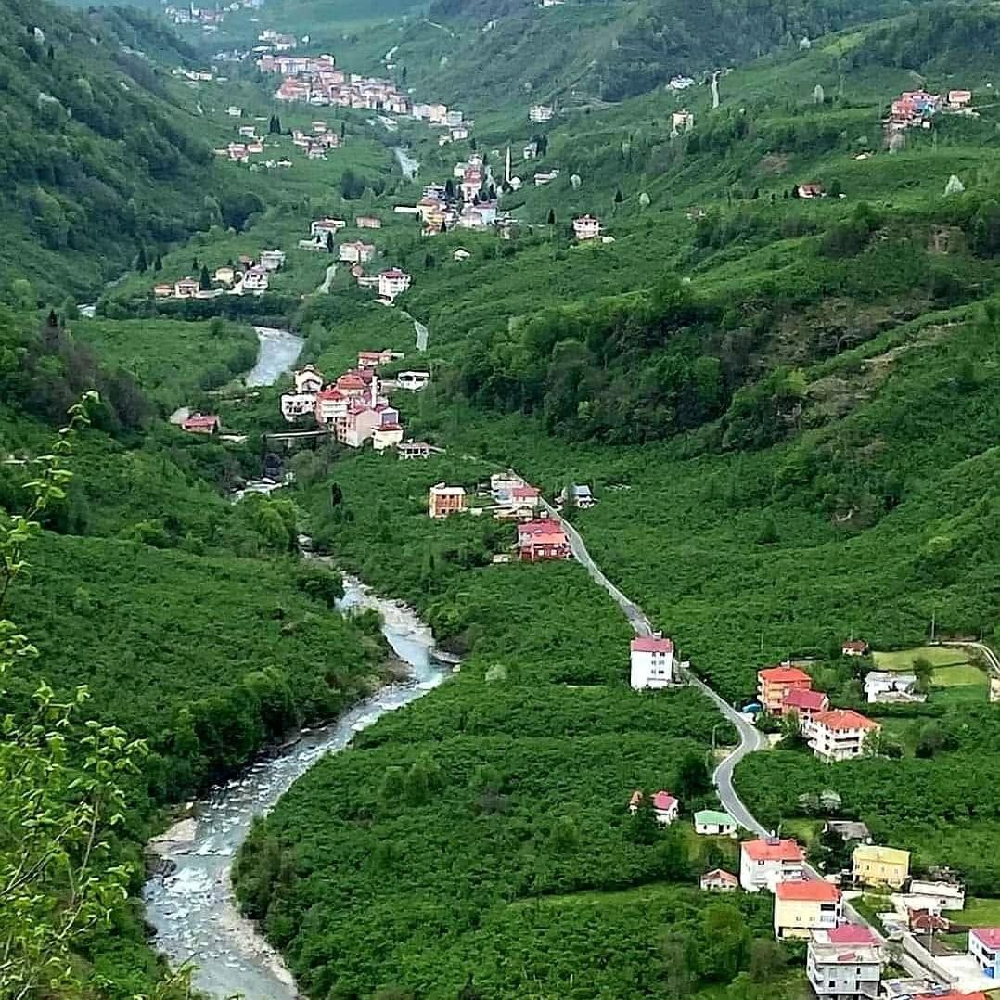

Giresun'un eşsiz doğası ve Islık Dili'nin (Kuşdili) Anavatanı
Giresun'un şirin ilçesi Çanakçı; dik yamaçları, gür ormanları, berrak dereleri ve asırlık kültür bağlarıyla Karadeniz'in saklı cennetlerinden biridir. Yeşilin her tonuna ev sahipliği yapan bu coğrafya, doğaseverler ve kültür meraklıları için benzersiz bir atmosfer sunar.
